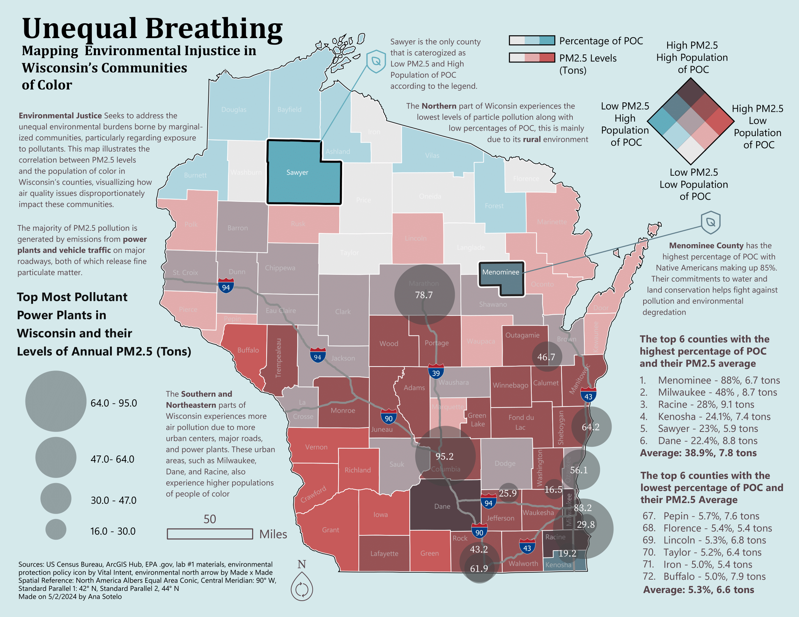

This map was created as my final project for Geog 370 Intro to Cartography. It illustrates the correlation between PM2.5 levels and the population of color inWisconsin’s counties. I was inspired from initial conversation of environmental justive in a previous global environmental issues course. This project examines how environmental burdens can disproportionately affect marginalized populations.
I used county-level data from the U.S. Census Bureau and the EPA, the map visualizes PM2.5 levels alongside the percentage of people of color, highlighting spatial patterns across the state. A bivariate color scheme was used to communicate where high pollution and high population vulnerability overlap, allowing viewers to quickly identify counties experiencing compounded environmental risk. The map also incorporates major pollution sources, including power plants and transportation corridors, to provide context for some of the observed patterns.
This project was one of the first exposures to a growing interest in using cartography to explore the interconnection of environmental issues and proccess to the communities that are affected by them!
